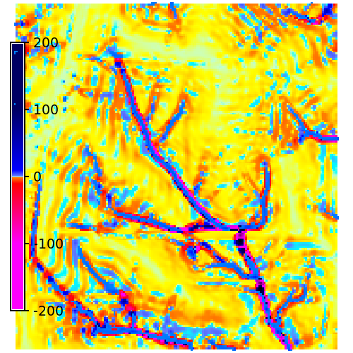
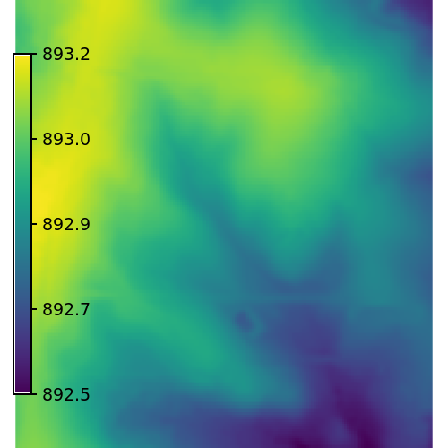
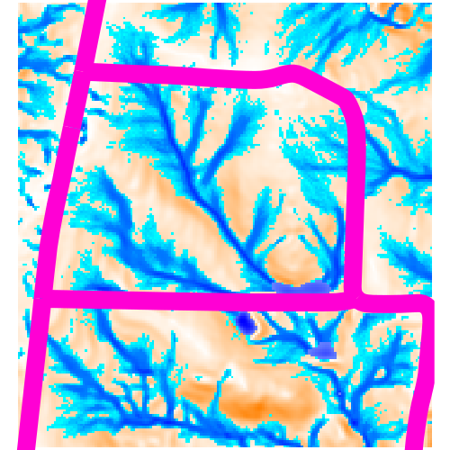
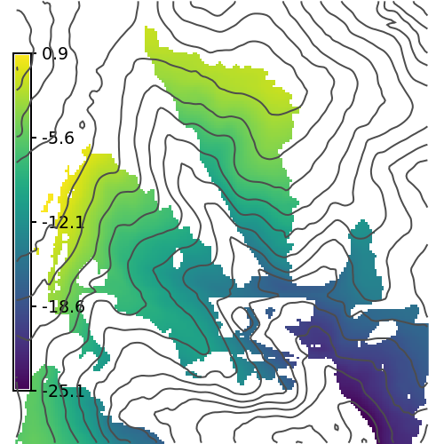
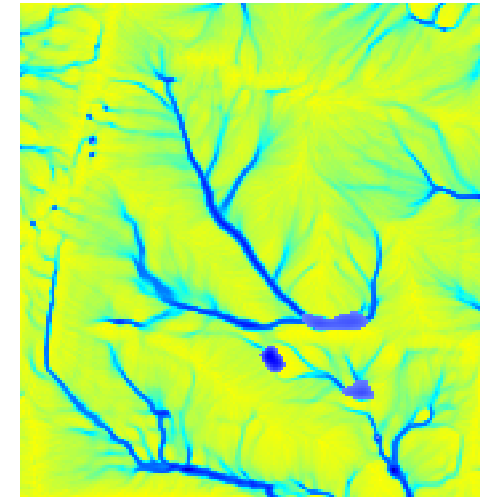
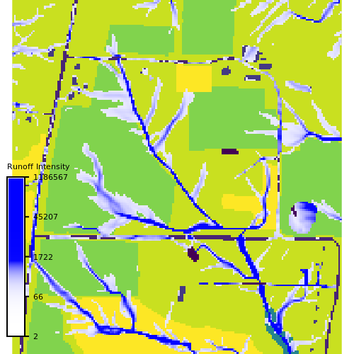

Created by Kailee Berge.
Change topography and observe changes in waterflow and erosion.

Created by Adam Bloom.
After changing topography visualize solar radiation for potential areas of photochemical reactions!

Created by Jillian Greene.
Change topography and observe changes water.

Created by Juan Sebastian.
Compute viewshed based on a marker placed on the tangible landscape.

Created by Sara Cornejo.
Change topography and observe changes in water flow and pond accumulation.

Created by Abby Wiese.
Reshape the tangible landscape and observe how runoff intensity (blue=low, red=high) changes in response. In this analysis, runoff intensity considers both the topography and the landcover of the landscape which impacts the roughness of the surface and therefore how water behaves.
